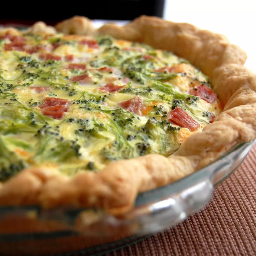

Home
Quiche Recipe

Description
This is a simple recipe for a basic quiche.
You can customize it and add whatever quiche fillings and flavorings you like!
Ingredients
- 1 1/2 cups shredded Swiss chesse
- 4 tsps all-purpose flour
- 1 (9 inch) unbaked pie crust, frozen
- 1/2 cup cooked hame, diced
- 3 large eggs
- 1 cups milk
- 1/4 tsp salt
- 1/4 tsp ground dry mustard
- 2 tbsp chopped fresh parsley
- 2 tbsp chopped pimiento peppers
Steps
- Gather all ingredients. Preheat the oven to 400 degrees F (200 degrees C.)
- Toss shredded cheese and flour together in a medium bowl. Sprinkle mixture onto frozen pie crust. Add diced ham on top of cheese.
- Combine eggs, milk, salt, and dry mustard in a medium bowl. Beat until smooth and pour over cheese and ham.
- Place foil around the edges of the crust to protect it from burning.
- Bake in the preheated oven until the filling is set and the crust is golden brown, about 1 hour. A knife inserted into the center of the quiche should come out clean.
- Garnish with parsley and pimento peppers before serving.
Original recipe link